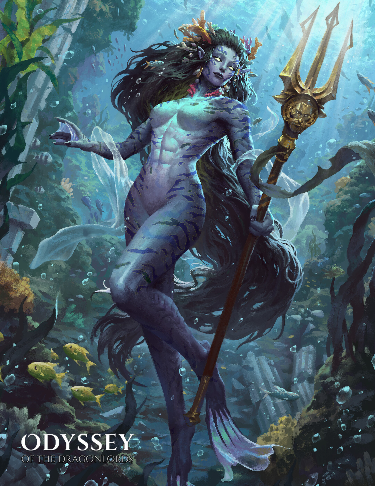

Thylea
Kontynent, na którym polityka, bogowie i stare opowieści są elementami tego samego krajobrazu.
Druga odsłona odyseji zachowuje mitologiczny język Thylei, ale jej własna historia zatrzymała się mniej więcej w połowie drogi.

Kontynent, na którym polityka, bogowie i stare opowieści są elementami tego samego krajobrazu.
Oath of Peace jest fundamentem pamięci świata i cieniem dawnego konfliktu.
Nowe pokolenie otrzymuje historię starszą od własnych bohaterów.
Martyna
Diana
Mariusz
Shaggy
Mateusz
Amadeusz
Druga odyseja zatrzymała się mniej więcej w połowie drogi.
Kampania została przerwana z powodu rozpadu drużyny. Archiwum zachowuje mit, nawet bez pełnego zakończenia.